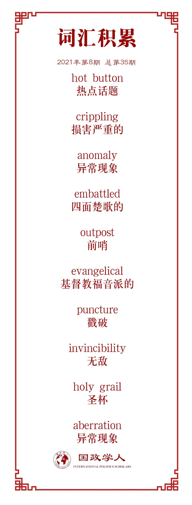

收录于合集

作品简介
【作者】 Dov Waxman, 加利福尼亚大学洛杉矶分校的政治学教授，索拉亚纳扎里安以色列研究中心主任，专攻巴以冲突，以色列政治与外交，以及美以关系；Jeremy Pressman, 康涅狄格大学政治学副教授，研究领域为巴以冲突，中东政治，美国外交政策。
【编译】 江若婵（国政学人编译员，伦敦政治经济学院）
【校对】 廖泽玉
【审核】 吴天麟
【排版】 韩柯
【美编】 臧泽华
【来源】 Waxman, D., Pressman, J. (2021) “The Rocky Future of the US-Israeli Special Relationship”, in The Washington Quarterly, 44(2), pp. 75-93.
【归档】 《国际关系前沿》2021年第8期，总第35期
期刊简介
《华盛顿季刊》（ The Washington Quarterly ）是一本国际事务期刊，为全球安全，外交关系和政策影响等议题提供了广泛且有见地的见解。其内容还涵盖了美国与中国等崛起中的国家在世界上的地位，核武器扩散的挑战，以及阿拉伯之春在中东地区的残余影响，等等。它由著名智囊团战略与国际研究中心 (Centre for Strategic and International Studies) 于1978年创立，由乔治华盛顿大学埃利奥特国际事务学院出版。2021年它的影响因子为1.288。
**美国-以色列特殊关系的坎坷未来 ******
The Rocky Future of the US-Israeli Special Relationship
Dov Waxman
Jeremy Pressman
文章导读
01
引言
在过去四年融洽的美以关系中，特朗普政府与本杰明·内塔尼亚胡总理领导的以色列政府一直站在同一阵线上，然而美以关系势必在乔·拜登未来四年的总统任期中面临压力。关于像伊朗核计划和巴以冲突这样的热点话题，拜登政府明显正试图扭转其前任的几项政策，这些政策都受到了以色列政府的热情支持。拜登政府同时希望美国重新加入2015年的核协议，让伊朗再次遵守它。为了达成这个目标，他需要解除美国对伊朗施加的严厉制裁，这在以色列看来是对伊朗危险的让步。
拜登政府在努力恢复拥有几十年历史的，特朗普时期之前的美国对巴以冲突的政策——与双方接触，作为一个公平的调解人（或者至少看上去如此），并促进一个两国解决方案（a two-state solution）——这也将引起以色列和其在美国的右翼支持者们的反对。虽然拜登政府不会撤销美国对耶路撒冷作为以色列首都的承认，也不会将其大使馆迁回特拉维夫，但是可能会放弃特朗普偏颇的和平计划（这将允许以色列正式吞并约旦河西岸的三分之一），并撤销前国务卿迈克·蓬佩奥说以色列定居点并不违反国际法的声明。拜登政府也将尝试在东耶路撒冷重新开放美国领事馆，并允许巴勒斯坦人重新开放他们在华盛顿的外交使团，该使团被特朗普政府在2018年关闭。然而，这些步骤一定会饱受争议，特别是现在美国两党丧失了以两国法案来解决巴以冲突的共识。
但是除了这些美国对巴以冲突的政策问题以外，更深层次的美以特殊关系本身在国内也引起了争议。问题不在于美国是否应该继续支持以色列——美国国内对此仍有共识——而是美国应如何支持以色列。一派认为美国应毫无保留地支持以色列，主张“以色列——不论是非”的做法。另一派认为支持以色列并不意味着必须给它一张空白支票，任其为所欲为。他们提倡“严厉的爱 (tough love)”的做法，有时候美国需要不同意以色列政府的政策和行为，甚至是施加压力来改变它们。因为前一种观点的拥护者往往是共和党的决策者和选民，后一种观点的拥护者往往是民主党人，关于美国应如何支持以色列的辩论同时也是一个党派问题。在以色列于加沙地带新一轮与哈马斯和其他巴勒斯坦激进组织的作战中，这些不同的观点清晰地展现了出来。民主党的立法者们向拜登政府施压，要求立即停火——并迫使以色列政府接受停火——共和党人明确表示支持以色列的军事行动，并指责拜登总统支持力度不足。拜登因对不断升级的暴力事件的低调反应而受到左右两边的抨击，被认为未能通过上任后第一次重大外交政策考验。但这是一场他注定要失败的考验，因为他的政府不可能同时满足民主党内部，以及民主党与共和党在国会中互相矛盾的要求。
关于拜登政府对最新巴以危机的处理方式的激烈争论表明，美国的政坛与社会对于以色列发生了重大的转变。社交媒体上对于巴勒斯坦的大举支持，有些出自一些著名的进步派政客，也说明了这一点。我们预计无论拜登总统如何尝试着隐藏他与以色列政府的分歧，这样的争议在未来的几年中会加剧。这种共识的削弱不仅仅是特朗普政府无视规范的结果这么简单，尽管这样的规范传统上塑造了美以关系。特朗普与内塔尼亚胡的“兄弟情”，以及他们出于个人和党派利益蓄意将美以关系政治化的行为也不是罪魁祸首——即使这两个人无疑都为美以关系变成一个党派议题作出了贡献。相反，共识的削弱主要是由于美国国内的一些事态发展，这些事态已经发展了一段时间了。
本文确定了三种在美国国内发生的变化，共同使得美国对以色列的政策更具争议性且缺少统一性：转变的公众舆论，亲以色列游说团体的分裂，以及日益增长的党派政策分歧。我们认为美国对以色列的总体支持仍会持续至可预见的将来，至少只要与以色列保持密切关系符合美国的利益。
02
美国对以色列的支持的传统基础
要了解为什么美国对以色列的支持在国内越来越有争议，我们首先需要了解为什么这种支持在过去没有争议，尤其是自1970年代至今。以色列在1967年的中东战争中迅速取得了惊人的胜利之后，美国决策者开始将以色列视为战略资产，有助于遏制苏联在中东扩张影响力。1970年，以色列愿意支持约旦击退叙利亚可能发动的袭击，进一步巩固了美国对以色列的支持。但尽管冷战时期的战略考量是形成这段事实联盟的主要动力，这却并不能完全解释美国对以色列异乎寻常的支持。自1976年以来，以色列每年接受的美国外援普遍比任何国家都多，自1979年埃以和平条约签署以来，总额约为1000亿美元。除了巨额资金以外，美国也花费了大量的政治资本，在联合国与一大批其他的国际组织中保护以色列免遭批评与谴责。仅仅是在联合国安理会上，美国自1972年以来就否决了44项批评以色列的决议。虽然美国从各个方面受益于与以色列的联盟——例如，在情报，军事训练，军用科技，网络战和网络安全方面——没有任何其他的美国盟友一直收到同样多来自美国的金融与外交的支持。这种异常现象的解释根植于美国国内政治。简而言之，出于两大原因，支持以色列备受欢迎 (good politics)。
首先，支持以色列在政治上很受欢迎，因为美国公众是非常同情以色列的。这种同情可以追溯到以色列建国之初的1948年，主要是因为二战时的大屠杀使得美国人相信犹太人需要并值得拥有一个自己的国家。从那时起，美国公众出于各种原因对以色列产生了持久的好感——例如人们普遍相信两国拥有“共同价值观”，普遍认为以色列是“中东唯一的民主国家”，以及一个现在已经过时的观点，即西方世界孤悬在充满敌对势力的一个四面楚歌的前哨。
其次，支持以色列在政治上是权宜之计，因为支持以色列的政客会得到美国以色列公共事务委员会 (AIPAC) 的奖励，而那些不支持的人会受到惩罚。尽管亲以色列的游说团体从未像其批评者们说的那样权势滔天，但是它的确有能力奖赏支持其议程的政客，并惩罚那些被认为是反以色列的人，所以自1980年代以来它发挥着巨大的政治影响力，尤其在国会。可是，这两个因素现在正在发生变化。
03
美国公众舆论对以色列的变化
民意调查显示，美国人总体来说还是喜欢和支持以色列的，但不同的人口统计数据有差异。调查数据显示宗教信仰与对以色列的支持密切相关，因为与世俗化的美国人相比，信教的美国人更加支持以色列——福音派新教徒和正统宗教派犹太人对以色列的支持程度是最高的。代际差异也很重要，1980年以后出生的年轻人相比于年长的人对以色列的支持程度下降。年轻人和更世俗化的美国人也往往更加自由化，更有可能投票给民主党。这加剧了在支持以色列的问题上的党派分歧。事实上，在过去的十年中，共和党人比过去更加希望美国在冲突中站在以色列一边，而民主党比过去更加希望美国在冲突中保持中立。
我们不应该从这份调查数据中轻易得出结论，认为民主党不支持以色列。他们的态度比这更微妙。大多数民主党人仍然看好以色列（相对多数人仍然同情以色列胜过同情巴勒斯坦人，但他们现在将对以色列极其人民的喜爱与对以色列政府，尤其是总理内塔尼亚胡的厌恶区分开来。他们虽然批评以色列政府的政策，但仍然喜爱以色列这个国家。
04
超越AIPAC：亲以色列的游说集团已经分裂了
随着关于以色列的党派分歧不断扩大，亲以色列的游说团体也在衰弱。可以肯定的是，亲以色列的游说团体总体上仍然具有影响力，但是拥有互相竞争的议程的不同组织之间的分歧稀释了它的影响力。亲以色列团体之间的政治分歧始于1990年代，近年来越发严重，使得他们无法像早年一样团结一致，以同一种声音与美国政府对话。这不可避免地削弱了它们影响美国对以政策的集体能力。即便是AIPAC，最出名最强大的亲以色列游说团体，也不再发挥它曾经拥有的影响力了。过去，这种无与伦比的影响力部分是由于人们相信AIPAC一个就足以为美国犹太社区发言了。随着美国犹太人对以色列的态度日趋分化，尤其是他们对巴以冲突的看法，AIPAC已经失去代表绝大多数美国犹太人的公信力了。
亲以色列团体的分裂的另一个影响是从根本上质疑了“亲以色列”一词的含义。有这么多不同的亲以色列团体表达不同的观点，主张不同的政策，对于决策者或是其他任何人而言，究竟什么立场和什么政策才称得上是“亲以色列”已经不再清晰了。支持伊朗核协议算是“亲以色列”呢，还是反对它算呢？将美国经济援助提供给巴勒斯坦当局算是“亲以色列”吗？支持巴勒斯坦建国算“亲以色列”吗？这些问题的答案取决于你询问的亲以色列团体。这使得政策制定者即使在推行AIPAC反对的政策时，也能够宣布他们是“亲以色列”的。决策者还可以从任何适合其政治的亲以色列团体那里获取信息，分析和支持，并且他们还可以视情况和需求而定，求助于不同的团体。
亲以色列游说团体的力量减弱也是因为无法击败那些被视作强烈批评以色列的政客。在2020年大选前夕，中间派和右翼亲以色列团体未能在密歇根州，明尼苏塔州和纽约州的民主党初选中击败进步的国会候选人。因此，这一变化戳破了亲以色列团体的无敌光环，而这份无敌光环正是其权力的关键因素。而且这些选举的结果并非反常现象。它们是选举活动运作方式创新的结果，有助于公平竞争。现在的政治家可以使用像脸书和推特这样的社交媒体将他们的信息传达给潜在的选民，而不是在昂贵的电视广告上花钱，也可以从小额捐助者那里筹集到一大笔钱，减少了他们对政治行动委员会（political action committee）的依赖。
05
对以色列的党派政策分裂
民主与共和两党现在就美国应在多大程度上拥抱以色列政府这个问题上存在分歧。更为根本的是，两党的决策者在“亲以色列“的含义上意见不一。对于共和党人来说，这需要明确，不加批判的支持——”以色列，不论对与错“。而对于民主党人来说，这需要有条件的支持，有时候还需要“严厉的爱”。批判以色列政府的政策与行动不一定是“反以色列”——事实上，这表达了对以色列这个国家最根本的支持。相比之下，共和党人认为批评以色列无异于攻击它并与它的敌人联手。
进步主义者和自由主义者曾将以色列视为冲突中无辜的受害者，以及一个拥有共同价值观的国家。现在他们倾向于认为以色列在压制迫害巴勒斯坦人，并且越来越同情后者。巴勒斯坦代替了以色列成为他们眼中脆弱的一方，需要美国的支持与保护。民主党人甚至开始质疑美国对以色列的援助，这在很长时间内都是一个政治禁忌。现在民主党内部的温和派和进步派之间关于是否要限制美国对以色列的援助展开了日益激烈的辩论。若干民主党的参议员和国会议员已经表示他们反对任何将支持以色列吞并约旦河西部地区的美国援助。有几个人甚至更进一步，呼吁如果以色列单方面地吞并约旦河西岸的领土就切断美国的援助。
民主党不太可能在关于巴以冲突和美国对以援助的立场上太过左倾。在巴以问题上持进步立场的民主党人在国会中仍占少数，温和派仍完全掌控该党的领导职位，最有名的便是众议院议长南希·佩洛西。大多数批评以色列的民主党人不愿意从修辞性批评转向支持实质性惩罚，比如条件性援助，不想冒着疏远该党长期依赖的美国犹太选民和捐助者风险。特朗普政府逆转了美国几十年来的对以政策，展现了共和党可以从基于相互妥协的处理巴以冲突的方式，大幅转向至强烈支持以色列。在民主党尝试着对冲突采取更公平的态度，并担忧着双方的权利时，共和党人公开表示他们只同情以色列。
现在两党关于应该如何解决巴以冲突有着截然不同的看法。民主党仍然支持谈判而来的两国解决方案，其中以色列和巴勒斯坦都要做出重大让步。相比之下，共和党不再致力于两国方案，至少不是一个会导致一个可行的，持续的巴勒斯坦共和国的方案。他们愿意支持以色列想要的任何结果，即使这个结果不民主，不公平。支持谈判而成的两国解决方案的两党共识已经消失了。相反，现在关于如何解决冲突存在的是党派分歧，甚至对于解决该冲突是否重要也意见不一。几十年来，两党都同意解决巴以问题的重要性。它成了美国外交的圣杯，被从卡特到特朗普的一系列总统都以不同程度的紧迫追寻着。虽然大多数民主党人不再相信解决巴以冲突就能稳定中东的局势，或是大大减少当地的极端主义和反美情绪，他们仍出于人权考虑呼吁终止冲突。相较之下，共和党人几乎不担心巴勒斯坦人的人权问题，而是更专注于加强以色列的安全以及其与海湾阿拉伯国家的联盟来对抗伊朗。对他们来说，对抗伊朗比巴以之间的和平更为重要（事实上，一些共和党人担忧如果巴勒斯坦建国，它最终可能成为伊朗的盟友）。
06
美国在以色列问题上的脆弱共识
在未来的十年中，我们预计美以关系将更加动荡，美国对巴以冲突的政策会变得更不稳定与不一致。美以关系将随着双方政府的变化而波动。有人可能会希望内塔尼亚胡最终下台以后美以关系会稳定下来。在他的任期内，这段双边关系大起大落。内塔尼亚胡与共和党关系密切，使得他在民主党中不受欢迎，尽管他们可能会欢迎他的继任者，但他们也很快会发现贝内特或者任何右翼领导人会继续他的许多政策，尤其是关于巴勒斯坦的政策。大多数以色列犹太人现在都是右翼，并投票支持右翼政党。因为以色列日益增长的宗教人口——他们往往是右翼，以色列左翼进入了长期衰退。他们无法说服以色列人与巴勒斯坦人的和平是有可能的，而且是可以重塑的。
无论哪一方执政，美国对以色列的援助至少会持续到接下来的十年。在任的民主党总统会基于美国的战略利益援助以色列，而非特殊关系。但援助会随着美国战略利益的变化而更加艰难，因为美国对中东石油的依赖正在降低，且越来越倾向于专注与中国的大国竞争。正如我们从奥巴马到特朗普，特朗普到拜登的过程中所目睹的那样，总统将定期改变前任的政策。这些转变为巴以的决策者创造了新的动力。特别是在总统任期的后期，如果他们认为下一任总统会对他们更好，就会尝试着熬过当前的这一任。这会降低美国政府对以色列和巴勒斯坦当局的影响力。以色列官员已经在担心美国想从中东撤军并将注意力转向亚洲。他们担忧美国正试图逐步脱离中东。有着这样的顾虑，再加上不同的美国政府很有可能推翻其前任的承诺，巴以的领导人都不会愿意相信美国对他们做出的承诺了。这将大大削弱美国帮忙调停一项和平协议的能力，该能力本身就已遭到严重怀疑，因为在过去的二十年中美国都没有做到帮忙达成一项和平协议。
美国对巴以冲突的不稳定与不一致表明美国不应该垄断调节冲突的权力。取而代之的是一种多边方法，可能要与联合国或者欧盟合作，这样调解冲突会更可靠，也会更有效。这还能使得美国在这场冲突中保持低调，从而有助于缓和国内关于这方面的争端。最后，如果允许其他国际行为体在巴以冲突中发挥更大作用，美国将可以在巴以冲突中将这段双边关系与以色列进行一定程度的切割。
译者评述
本文是一篇条理清晰，逻辑严明且具有专业性的分析文章，将美以之间特殊关系的背景，成因，发展和当下的挑战等各个方面描述得通俗易懂。尽管二战后的世界霸主美国在世界范围内盟友很多，但以色列应该是其最亲密，支持度最高的一个，使得其他盟友纷纷相形见绌。美国对以色列的大力扶持甚至达到了类似于政治正确的高度，就连对其的质疑都成了政治禁忌话题，这在人类历史上国家间的盟友关系中都是罕见的。然而，就连这样数十年坚如磐石的关系如今都摇摇欲坠，可见近年来世界局势的变化之大。美以关系的急转直下也不过是近年来世界宏观格局大变化中的一部分罢了。
通观全文，可知美以关系的变化是源于美国国内政界和公众思想上的大转变以及日益增长的观念撕裂。这个趋势从2016年特朗普的意外当选就开始了，几乎是到了非此即彼的程度，是至今为止美国本身最需要克服的问题。美国庞大的联盟体系使得它本身的任何发展变化都会在整个西方联盟中传达扩散，而它的内部撕裂就给盟国带来了令人尴尬的选边站问题。与上一任政府关系亲密的盟国往往会受到下一任政府的冷眼相待，反之亦然。内塔尼亚胡当政时为了国家利益主动加深了自己与特朗普的关系。尽管二人的价值观确实很接近，但内塔尼亚胡对特朗普的示好更多地应该还是出于他美国总统的身份，而不是特朗普这个个人。但是过分的亲密就不可避免地导致民主党对他产生不满了。虽然拜登大体上仍然是支持以色列的，但绝对没有特朗普时期那么热情，这样的落差自然会使人觉得美以关系变差了。这一点作者没有提到，使得他所说的“美以关系变差”有点夸张的成分在。大体的支持以色列的战略没有变，变的只是两党之间的差距。相同的情况也发生在了欧洲和亚洲盟友的身上。因为美国自身党派的撕裂，它的政策在盟友眼里就失去了公信力，因为谁也不知道下一任总统出自哪个党，万一党派不同，那么自己与当前总统达成的一切外交成果恐怕要纷纷清零。因此欧洲在拜登上台以后仍然持观望态度。德国与法国因不愿过分积极参与美国反华联盟而在G7发生争端，并继续在商贸经济领域保持与中国的合作。这样的情况甚至发生在了美国本国的总统身上。就像本文提到的拜登第一次外交政策考验注定是失败的，因为他无论怎么做都一定会招致一党的不满，里外不是人。而这个大难题也会传递给拜登之后的总统。
另外，在几十年间，巴以的角色悄悄地发生了一定程度上的互换。二战时期纳粹德国对于犹太人的血腥屠杀在给这个民族制造了巨大的不幸的同时，也给他们送去了不可估量的隐性政治资本。战后以色列因为受害者的身份获得了道义的至高点，获得了美国人的同情，以及该同情转化的政治资源。不过可谓成也萧何败也萧何，巴以之间的力量对比数十年间此消彼长，当今的以色列早已不是弱者了，在与巴勒斯坦的相争中常常处压倒性优势地位，有时候会显得咄咄逼人，具有攻击性。再加上内塔尼亚胡一贯的强硬手段，使得部分美国人同情的对象变成了巴勒斯坦，反而对以色列不利。
在学术严谨方面，虽然作者的观点是美以关系在未来会面临波折，但也同时强调帮助以色列符合美国整体的国家利益，短期内是绝不会变的。但他所列举的一些新的发展态势无一不在表示变化的可能性在增大。首先随着世界格局的变化，国家利益也会变化，比如因为与中国的大国博弈，东亚的重要性相对提高，中东的重要性相对下降，以色列也势必被进一步冷落。其次，美国国内代际以及科技水平的更新都对以色列不利。而随着时间的推移，不怎么喜欢以色列的年轻人所占的人口比例会越来越高，政治竞选的方式也会多种多样，使得以色列财团的影响力随着下滑。第三，美国政坛内出现了将以色列政府与作为一个国家的以色列分开的声音，而这对于在国际政治中代表以色列的以色列政府无疑会产生负面影响。在2020年大选中许多支持以色列的候选人无法击败对手，从此就能看出以色列在美国公众舆论中的的颓势已经开始了。
本文的一大亮点是指出了共和党几乎对以色列毫无条件的支持背后的主因，即利用以色列牵制住巴勒斯坦，不让他们成立一个会与伊朗结盟的国家。所以根本目的在于抑制伊朗。而近年来随着民主党越发左倾，共和党越发右倾，这一战略目的在共和党内的重要性最终超过了数十年来稳居中心的谋求巴以和平的重要性。换言之，和平反而不符合共和党利益，巴勒斯坦人的人权也不在共和党的考虑范围内。这不仅体现了面对人权问题的双重标准，也反映了共和党一贯对民主党奉为圭皋的价值观问题不是很上心。另一亮点是指出多年来美国在巴以问题上的外交垄断是不合理的，私利太重，引入更多的国际行为体才有益于推进真正的和平。而美国本身也可以借此机会平息国内对这个问题的尖锐对立，加强团结，同时也不会太波及美以双边关系。
词汇整理

文章观点不代表本平台观点，本平台评译分享的文章均出于专业学习之用, 不以任何盈利为目的，内容主要呈现对原文的介绍，原文内容请通过各高校购买的数据库自行下载。
好好学习，天天“在看”
国政学人
支持学术公益与知识传播
微信扫一扫赞赏作者 __赞赏
已喜欢，对作者说句悄悄话
取消 __
发送给作者
发送
最多40字，当前共字
上一页 1/3 下一页
长按二维码向我转账
支持学术公益与知识传播
受苹果公司新规定影响，微信 iOS 版的赞赏功能被关闭，可通过二维码转账支持公众号。